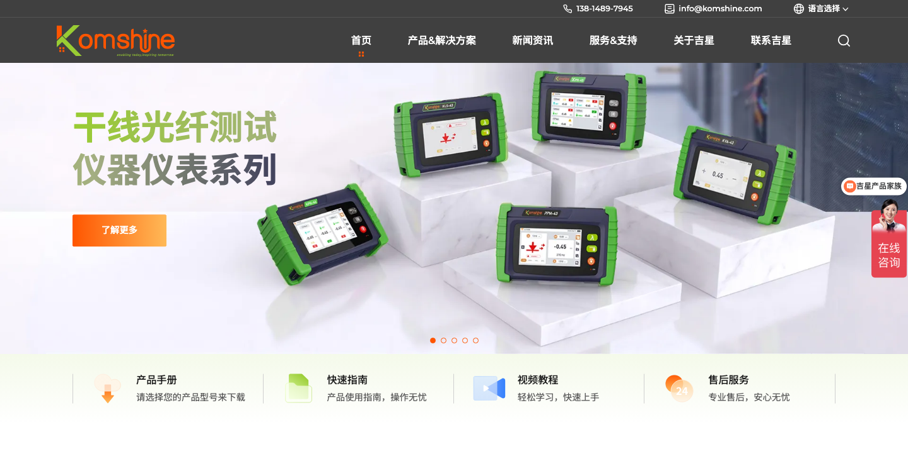
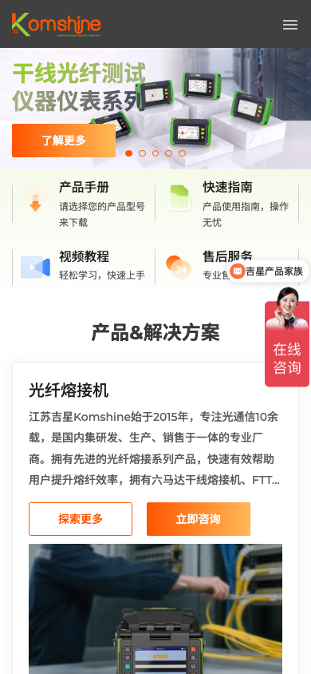

01 / FIELD FIRST
先把设备放回真实工位
机柜、光缆、熔接与测试动作让抽象参数拥有工作现场，Hero 先回答“它在哪里被使用”。
01 / OPERATION MAP
光通信设备的价值发生在机房、铁路、煤矿、电力和施工现场。原站把产品中心、服务快捷入口、解决方案说明与咨询动作排成连续路径，减少用户在目录与支持系统之间来回跳转。
机柜、光缆、熔接与测试动作让抽象参数拥有工作现场，Hero 先回答“它在哪里被使用”。
光纤熔接机、OTDR、测量仪器、ODN 网络、光纤清洁、光纤工具组成采购入口。
PRODUCT FAMILIES产品手册、快速指南、视频教程、售后服务让“买什么”迅速延伸到“怎么用”。
DOWNLOAD / LEARN / REPAIR研发团队、国际语种、服务国家、服务客户在关于吉星区形成从能力到覆盖的证据条。
SOURCE CLAIMS / VERIFY02 / PRODUCT ARCHITECTURE
原站桌面端以左侧分类 + 右侧详情实现“选择类别—理解用途—进入详情”，移动端收窄为单列叙事。案例页保留这一信息架构，并让键盘、触摸和 hover 都有等价反馈。
FAMILY 01 · SPLICE
从六马达干线机到 FTTx 皮线机，原站先用场景与效率描述品类，再把用户带向具体型号与咨询动作。
进入原站分类分类名负责定位任务，型号页负责承接参数、应用、合规和询盘；不要把整张产品表直接塞进首屏。
03 / SUPPORT LAYER
四个快捷服务卡片是原站很实用的 B2B 设计：用户无需先理解公司组织，就能按任务进入手册、指南、视频或售后。它们也是产品目录与服务系统之间的桥。
当设备需要安装、校准、学习或维修时，把服务作为首屏后的第二层导航，比在页脚藏一个“下载中心”更能降低采购和交付摩擦。
04 / GLOBAL PROOF
关于吉星区把企业介绍与统计条放在同一画面：研发团队对应能力，国际语种对应沟通，服务国家对应网络，服务客户对应影响面。
SOURCE CLAIM / VERIFY BEFORE REUSE
查看原站关于吉星 ↗05 / RECOMMENDED PRODUCTS
原站用推荐产品展示长列表和新品节奏，帮助访客从品类进入具体型号。案例页只保留 6 个代表卡，观察其“名称—型号—详情路由”关系，不复制全部 SKU。
06 / MOTION AUDIT
原站通过 Swiper、Swiper Animate、WOW、CountUp、Hover 与移动菜单形成多层节奏。案例页把它拆成可迁移的实现条件，同时保留静态内容和 reduced-motion 退路。
CHAPTER 01 · HERO
Hero 由 5 张 1920×750 图片组成，Swiper 4 秒自动切换、圆点可点击，文字用 fadeInUp 与场景同步。
07 / RESPONSIVE AUDIT
原站在 990px 以下隐藏桌面 Header，启用汉堡菜单；服务卡变成两列、产品内容纵向展开、推荐产品和新闻滑动收窄。案例页保留证据并把可访问性与缩放限制列为重构项。


KEEP
REFINE
08 / AI INSTRUCTIONS
以下规则适用于光通信、仪器仪表、工业工具与其他“专业参数深、现场任务强”的 B2B 官网。复制决策逻辑，不复制吉星的企业事实和素材。
用机房、施工、测试动作建立设备尺度，再通过参数、型号和详情页补足决策证据。
熔接、测试、测量、分配、清洁、工具对应不同工作任务，分类名称要让采购者快速自我定位。
手册、快速指南、视频和售后不是页脚补充，而是帮助设备真正被交付和使用的关键入口。
研发、语言、国家、客户四类数字分别对应能力、沟通、网络与影响面，并标注统计口径。
轮播、hover、CountUp 和移动菜单必须在慢网、键盘、触屏、无脚本与 reduced-motion 下仍然可读可进。
09 / SOURCE ARCHIVE
本案例保留中文首页快照、原站主 CSS/媒体查询、Swiper/WOW/CountUp 依赖、Hero/产品/服务/新闻素材及桌面/手机截图。完整映射和清理边界见 manifest.md。